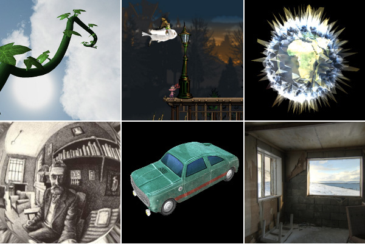
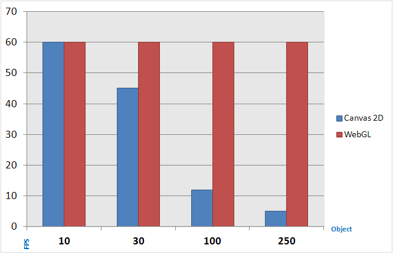
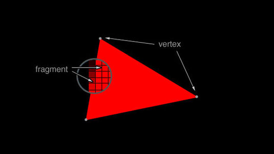
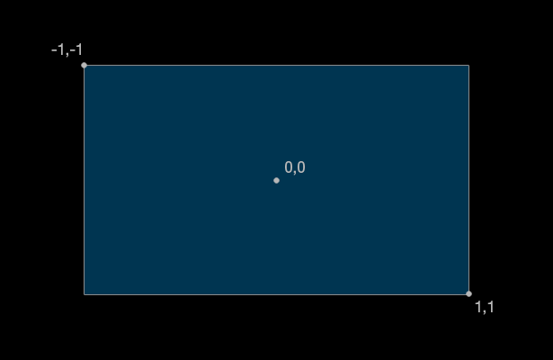

name: inverse layout: true class: center, middle, inverse --- #WebGL: A 2D Universe Simulation @sorpaas --- layout: false .left-column[ ## About ] .right-column[ Before the talk, bear a Lojbanist saying something about Lojban ... - coi mi'e la sorpa'as <br> (My name is sorpa'as/Brendan) - .i e'o do cilre la lojban <br> (Learn Lojban!) .footnote[.red[*] "sorpa'as" pronounces as /sorpahas/, not /sorpas/.] ] --- template: inverse ## WebGL, 3D for Web? --- layout: false .left-column[ ## Intro ## WebGL is .. ] .right-column[ * A Javascript API * Run (almost) everywhere  .footnote[.red[*] Copyright © 2006–2014 Opera Software ASA. Some rights reserved.] ] --- template: inverse ## I'm excited, show me some example! --- layout: false .left-column[ ## Intro ## A Three.js Example ] .right-column[ A basic example from the "Get Started" guide on Three.js website: ```html <html> <head> <title>My first Three.js app</title> <style> body { margin: 0; } canvas { width: 100%; height: 100% } </style> </head> <body> <script src="js/three.min.js"></script> <script> // Our Javascript will go here. </script> </body> </html> ``` ] --- .left-column[ ## Intro ## A Three.js Example ] .right-column[ A basic example from the "Get Started" guide on Three.js website: ```javascript var scene = new THREE.Scene(); var camera = new THREE.PerspectiveCamera( 75, window.innerWidth / window.innerHeight, 0.1, 1000 ); var renderer = new THREE.WebGLRenderer(); renderer.setSize( window.innerWidth, window.innerHeight ); document.body.appendChild( renderer.domElement ); ``` ] --- .left-column[ ## Intro ## A Three.js Example ] .right-column[ A basic example from the "Get Started" guide on Three.js website: ```javascript var geometry = new THREE.BoxGeometry( 1, 1, 1 ); var material = new THREE.MeshBasicMaterial( { color: 0x00ff00 } ); var cube = new THREE.Mesh( geometry, material ); scene.add( cube ); camera.position.z = 5; ``` ] --- .left-column[ ## Intro ## A Three.js Example ] .right-column[ A basic example from the "Get Started" guide on Three.js website: ```javascript function render() { requestAnimationFrame( render ); renderer.render( scene, camera ); } render(); ``` ] --- .left-column[ ## Intro ## A Three.js Example ] .right-column[ A basic example from the "Get Started" guide on Three.js website: ```javascript function render() { requestAnimationFrame( render ); cube.rotation.x += 0.1; cube.rotation.y += 0.1; renderer.render( scene, camera ); } render(); ``` ] --- .left-column[ ## Intro ## A Three.js Example ] .right-column[ A basic example from the "Get Started" guide on Three.js website: <center><a href="example1.html">Results of the example</a></center> ] --- template: inverse ## Use frameworks such as Unity or Three.js if you want to create a 3D scene in WebGL. --- template: inverse ## But that's not today's (main) topic. --- layout: false .left-column[ ## Intro ## Drawing in WebGL ] .right-column[ Wikipedia on WebGL: > WebGL (Web Graphics Library) is a JavaScript API for rendering interactive 3D graphics and **2D graphics** within any compatible web browser without the use of plug-ins ... > ] --- template: inverse ## Wait, isn't there HTML Canvas? --- layout: false .left-column[ ## Intro ## Drawing in WebGL ## Why? ] .right-column[ Performance:  .footnote[.red[*] © 2012 Tizen Project, a Linux Foundation Project. Creative Commons Attribution 3.0.] ] --- template: inverse ## Programmable shaders and General-purpose computation in GPU (GPGPU) --- template: inverse ## A 2D Universe Simulation [Demo](http://universe.ns.mg) ```javascript appendParticle(500, 1, 1); ``` --- layout: false .left-column[ ## Canvas 2D Universe Simulation ] .right-column[ Once upon a time: ```javascript for (var particle in particles) { particle.draw(c); } ``` ] --- layout: false .left-column[ ## Canvas 2D Universe Simulation ] .right-column[ Current code: ```javascript bufferCtx.beginPath(); for (i = 0; i < len; i++) { p = particles[i]; if (p.destroyed) continue; p.update(particles); bufferCtx.moveTo(offset.x + p.x, offset.y + p.y); bufferCtx.lineTo(offset.x + p._latest.x, offset.y + p._latest.y); } bufferCtx.stroke(); bufferCtx.beginPath(); for (i = 0; i < len; i++) { p = particles[i]; if (p.destroyed) continue; bufferCtx.moveTo(offset.x + p.x, offset.y + p.y); bufferCtx.arc(offset.x + p.x, offset.y + p.y, p.radius, 0, Math.PI * 2, false); } bufferCtx.fill(); ``` ] --- template: inverse ## OK, then where's the WebGL you promised? --- template: inverse ## A 2D Universe Simulation in WebGL [Demo](http://universe.ns.mg/particles) --- template: inverse ## 32678 (1024 * 32) particles. --- template: inverse ## Some Details --- template: inverse ## Igloo: Low Level API Wrapper for WebGL <br> https://github.com/skeeto/igloojs --- layout: false .left-column[ ## WebGL 2D Universe Simulation ## Igloo ] .right-column[ Initialize WebGL using Igloo: ```javascript var igloo = this.igloo = new Igloo(canvas), gl = igloo.gl; gl.disable(gl.DEPTH_TEST); // Because we are drawing 2D. ``` Or using WebGL API directly: ```javascript var gl = initWebGL(canvas); gl.disable(gl.DEPTH_TEST); ``` ] --- layout: false .left-column[ ## WebGL 2D Universe Simulation ## Igloo ] .right-column[ Prepare necessary materials: ```javascript this.programs = { ... }; // Vertex shaders and fragment shaders this.buffers = { ... }; // Some useful WebGL buffers (GL_ARRAY_BUFFER) this.textures = { ... }; // Some textures this.framebuffers = { ... }; // Some framebuffers ``` ] --- layout: false .left-column[ ## WebGL 2D Universe Simulation ## Igloo ] .right-column[ Create a draw function: ```javascript function draw() { var igloo = this.igloo, gl = igloo.gl; ... this.programs.draw.use() .attrib('index', this.buffers.indexes, 2) .uniformi('positions', 0) .uniformi('velocities', 1) .uniform('statesize', this.statesize) .uniform('worldsize', this.worldsize) .uniform('size', this.size) .uniform('scale', this.scale) .uniform('color', this.color) .draw(gl.POINTS, this.statesize[0] * this.statesize[1]); return this; } ``` ] --- layout: false .left-column[ ## WebGL 2D Universe Simulation ## Igloo ] .right-column[ Draw it, finally: ```javascript window.requestAnimationFrame(function() { ... this.draw(); ... return this; }); ``` ] --- template: inverse ## Where's the code for drawing particles, and calculating gravities, then? --- layout: false .left-column[ ## WebGL 2D Universe Simulation ## How Does WebGL Draw? ## The Rendering Pipeline ] .right-column[ - Javascript ```javascript this.draw(); ``` - Uniform state and vertex buffers ```javascript this.textures = { ... }; ... this.textures.gravity.bind(0); program.use() .attrib('index', this.buffers.indexes, 2) .uniformi('gravity', 0) .uniform('worldsize', this.worldsize) .draw(gl.TRIANGLE_STRIP, Igloo.QUAD2.length / 2); ``` - **Vertex shader** (Written in GLSL) ``` glsl/draw.vert ``` - *Rasterization* ] --- layout: false .left-column[ ## WebGL 2D Universe Simulation ## How Does WebGL Draw? ## The Rendering Pipeline ] .right-column[ - **Fragment shader** (Written in GLSL) ``` glsl/draw.frag ``` - Testing and blending - Framebuffer ```javascript igloo.defaultFramebuffer.bind(); //Draw on screen ``` or ```javascript this.framebuffers.gravity.bind(); //Draw to a framebuffer ``` ] --- template: inverse ## More about vertex shaders and fragment shaders --- layout: false .left-column[ ## WebGL 2D Universe Simulation ## Vertex and Fragment Shaders ] .right-column[ ## What are they?  ] --- layout: false .left-column[ ## WebGL 2D Universe Simulation ## Vertex and Fragment Shaders ] .right-column[ ## Arrange vertices ``` Igloo.QUAD2 = new Float32Array([-1, -1, 1, -1, -1, 1, 1, 1]); ``` * **GL_POINTS** * GL_LINE_STRIP * GL_LINE_LOOP * GL_LINES * GL_LINE_STRIP_ADJACENCY * GL_LINES_ADJACENCY * **GL_TRIANGLE_STRIP** * GL_TRIANGLE_FAN * GL_TRIANGLES * GL_TRIANGLE_STRIP_ADJACENCY * GL_TRIANGLES_ADJACENCY ] --- layout: false .left-column[ ## WebGL 2D Universe Simulation ## Vertex and Fragment Shaders ] .right-column[ ## Coordinate System ``` Igloo.QUAD2 = new Float32Array([-1, -1, 1, -1, -1, 1, 1, 1]); ```  ] --- layout: false .left-column[ ## WebGL 2D Universe Simulation ## Vertex and Fragment Shaders ] .right-column[ ## Draw on the full screen ```javascript this.programs.gravity.use() .attrib('quad', igloo.array(Igloo.QUAD2), 2) .draw(gl.TRIANGLE_STRIP, Igloo.QUAD2.length / 2); ``` ] --- layout: false .left-column[ ## WebGL 2D Universe Simulation ## A Vertex Shader ] .right-column[ In ```glsl/draw.vert``` ```c attribute vec2 index; uniform sampler2D positions; uniform sampler2D velocities; ... uniform vec2 scale; varying vec2 velocity; void main() { ... gl_Position = vec4(p / worldsize * 2.0 - 1.0, 0, 1); gl_PointSize = size; } ``` ] --- layout: false .left-column[ ## WebGL 2D Universe Simulation ## A Fragment Shader ] .right-column[ In ```glsl/draw.frag``` ```c uniform vec4 color; varying vec2 velocity; const float DELTA = 0.2; void main() { vec2 p = 2.0 * (gl_PointCoord - 0.5); float a = smoothstep(1.0 - DELTA, 1.0, length(p)); float e = 0.0 + length(velocity) / 3.0; gl_FragColor = pow(mix(color, vec4(0, 0, 0, 0), a), vec4(e)); } ``` ] --- template: inverse ## Textures --- layout: false .left-column[ ## WebGL 2D Universe Simulation ## Textures ] .right-column[ [OpenGL Tutorials: Introduction of Textures](https://www.opengl.org/sdk/docs/tutorials/ClockworkCoders/texturing.php): > Textures are basically a chuck of memory, often using R,G,B(,A) values with 8 bits per channel. Usually textures contain image data, but it is data, you can do with it whatever you want. In GLSL a texture is specified as a uniform variable. ] --- layout: false .left-column[ ## WebGL 2D Universe Simulation ## Samplers ] .right-column[ Sampler is the only way to access textures in shaders: ```javascript this.textures.p0.bind(0); this.programs.draw.use() .uniformi('positions', 0) .draw(...) ``` ```c attrib vec2 index; uniform sampler2D positions; void main() { vec4 psample = texture2D(positions, index / statesize); ... } ``` ] --- layout: false .left-column[ ## WebGL 2D Universe Simulation ## Recap ] .right-column[ The relationships between vertex buffers, vertex and fragment shaders, textures, framebuffers: * Vertex buffers are passed as attributes to vertex shaders for vertices to be drawn. * Textures can be passed to shaders, and the data within a texture can be fetched by a sampler. * Fragment shaders set the color to be drawn on the screen, one by one. * Those things are drawn to framebuffers. * Framebuffers can be the screen, or it can also be a texture. ``` igloo.framebuffer().attach(this.textures.obstacles) ``` ] --- template: inverse ## How do we get the positions and velocities of particles in a 2D universe? --- layout: false .left-column[ ## WebGL 2D Universe Simulation ## A GPGPU Strategy ] .right-column[ ```javascript this.textures.p0 // A texture that contains all position data this.textures.p1 // Another texture that contains all position data ``` A ```update``` program (vertex shader and fragment shader) that has ```p0``` as an input, and output to ```p1```, which is attached as a framebuffer. The ```update``` program update positions as desired. ```javascript function update() { this.framebuffers.step.attach(this.textures.p1); this.framebuffers.step.bind(); this.textures.p0.bind(0); this.programs.update.use() .attrib('quad', this.buffers.quad, 2) .uniformi('position', 0) .draw(gl.TRIANGLE_STRIP, Igloo.QUAD2.length / 2); } ``` Swap ```p0``` and ```p1``` afterwards: ``` this.swapTextures('p0', 'p1'); ``` ] --- template: inverse ## .red[Problem:] The data structure of p0 and p1 (texture) is vec4(RGBA), but we need a vec2 of floats. --- template: inverse ## .red[Solution:] Encode and decode it! --- layout: false .left-column[ ## WebGL 2D Universe Simulation ## Encoding and Decoding ] .right-column[ The encoding and decoding functions by [skeeto](https://github.com/skeeto), from 8 bit vec2 to float *(r: result, v: value, s: scale)*: \begin{equation} r1 = \lfloor \frac{(v\*s+255^2/2)\mod 255}{255}\*255 \rfloor \end{equation} \begin{equation} r2 = \lfloor \frac{\lfloor \frac{v\*s+255^2/2}{255} \rfloor}{255}\*255 \rfloor \end{equation} \begin{equation} v = \frac{(\frac{r1}{255}\*b+\frac{r2}{255}\*b^2) - b^2/2}{s} \end{equation} ] --- template: inverse ## How do we calculate gravity in a 2D universe? --- template: inverse ## Is there gravity in a 2D universe? --- layout: false .left-column[ ## WebGL 2D Universe Simulation ## Physics ] .right-column[ Something about **Gravity** (in the theory of "general relativity"): > The proper way to do this is using general relativity, and if you apply GR to 2+1D spacetime, you get something that looks basically nothing like gravity as we know it. In particular, space is only distorted or "curved" where there is actually mass, unlike our universe where the distortion extends beyond the region that actually contains the mass. Because that distortion is what we recognize as gravity, in a 2+1D world there would be no gravitational attraction. The presence of mass would cause some geometrical oddities, but there would be no force acting between separated masses. -- [StackExchange Physics: What is the 2D Gravity Potential?](http://physics.stackexchange.com/questions/30652/what-is-the-2d-gravity-potential) ] --- template: inverse ## Wow, that's a little bit boring ... --- layout: false .left-column[ ## WebGL 2D Universe Simulation ## Physics ] .right-column[ Generalized Newtonian Gravity: \begin{equation} \int \vec{g}\cdot\mathrm{d}\vec{A} = -4\pi GM \end{equation} In a 3D world, it would be \begin{equation} (4\pi r^2\hat{r})\cdot(g\hat{r}) = -4\pi GM \end{equation} or \begin{equation} \vec{F}_g = m\vec{g} = -\frac{GMm}{r^2}\hat{r} \end{equation} In a 2D world, it would be \begin{equation} (2\pi r\hat{r})\cdot(g\hat{r}) = -4\pi GM \end{equation} or \begin{equation} \vec{F}_{g\text{(2D)}} = m\vec{g} = -\frac{2GMm}{r}\hat{r} \end{equation} -- [StackExchange Physics: What is the 2D Gravity Potential?](http://physics.stackexchange.com/questions/30652/what-is-the-2d-gravity-potential) ] --- layout: false .left-column[ ## WebGL 2D Universe Simulation ## Calculate Gravity ] .right-column[ Create textures: ```javascript this.textures['g0'] = igloo.texture().blank(w, h); this.textures['g1'] = igloo.texture().blank(w, h); ``` Create a framebuffer: ```javascript this.framebuffers['gravity'] = igloo.framebuffer(); ``` ] --- layout: false .left-column[ ## WebGL 2D Universe Simulation ## Calculate Gravity ] .right-column[ In ```glsl/gravity.vert```, fill the full screen size: ```javascript attribute vec2 quad; void main() { gl_Position = vec4(quad, 0, 1); } ``` ] --- layout: false .left-column[ ## WebGL 2D Universe Simulation ## Calculate Gravity ] .right-column[ In ```glsl/gravity.frag```, encoding and decoding: ```javascript float decode(vec2 channels, float scale) { return (dot(channels, vec2(BASE, BASE * BASE)) - OFFSET) / scale; } vec2 encode(float value, float scale) { value = value * scale + OFFSET; float x = mod(value, BASE); float y = floor(value / BASE); return vec2(x, y) / BASE; } ``` ] --- layout: false .left-column[ ## WebGL 2D Universe Simulation ## Calculate Gravity ] .right-column[ And render to update: ```javascript void main() { vec2 pg = vec2(0.0, 0.0); if (index != 0) { vec4 gsample = texture2D(previousGravity, gl_FragCoord.xy / worldsize); pg = vec2(decode(gsample.rg, scale), decode(gsample.ba, scale)); } vec2 gravity = pg + 3.0 * normalize(gl_FragCoord.xy - position) / pow(distance(gl_FragCoord.xy, position), 1.0); gl_FragColor = vec4(encode(gravity.x, scale), encode(gravity.y, scale)); } ``` ] --- layout: false .left-column[ ## WebGL 2D Universe Simulation ## Calculate Velocity and position ] .right-column[ ```javascript void updateVelocity(inout vec2 p, inout vec2 v, vec2 obstacle, vec2 gravity) { v -= gravity; if (length(obstacle) > 0.5) { if (length(v) < 0.5) { v = obstacle * 0.5; } else { v = reflect(v, obstacle) * restitution; } } } void updatePosition(inout vec2 p, inout vec2 v, vec2 obstacle) { p += v + wind; if (length(obstacle) > 0.5) { p -= v; p += obstacle; } } ``` ] --- layout: false .left-column[ ## WebGL 2D Universe Simulation ## Lessons Learned ] .right-column[ - GPU computation is fast. - Use the simplest way to represent data -- directly store it in the screen. ] --- template: inverse ## Multi-star System: the Narrow Area [Demo](http://universe.ns.mg/particles) --- layout: false .left-column[ ## WebGL 2D Universe Simulation ## Scaling ] .right-column[ - **Add more properties to particles:** Just create more shaders. - **Bigger world size:** Bigger textures and framebuffers, or more textures and framebuffers. Treating gravity and light as waves would be more efficient. - **Data persistence:** Store textures and framebuffers to disk. - **Moving from browsers to servers:** Because all logic is written in shaders, it's easy to migrate to OpenGL. Shaders run everywhere! ] --- template: inverse ## Before the End: A Proposal --- layout: false .left-column[ ## lookup(food) ] .right-column[ - Food is expensive in Hong Kong. - However, there are events that provide food for free! - Events are interesting! - There is [foodbot](http://food-bot.com) in US! It is urgent to create some methods for people to easily get free food three meals a day. It saves $100 everyday, that is $3,650,000 for 100 years, enough to buy a house in Hong Kong! ] --- template: inverse ## Q & A [@sorpaas](http://sorpaas.com)